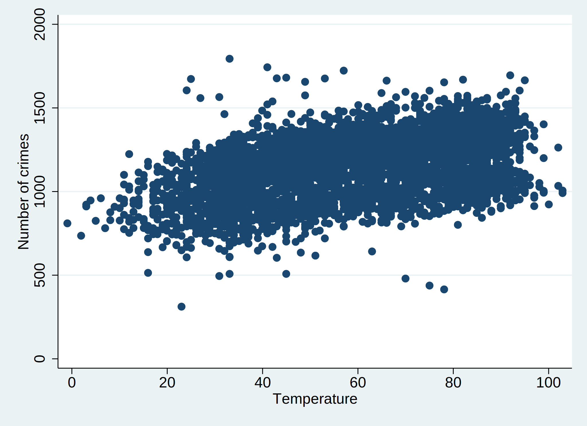
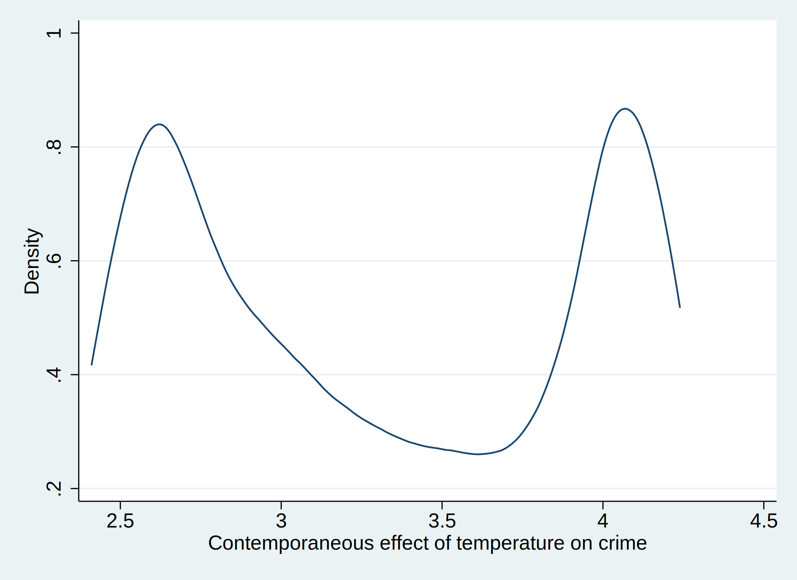
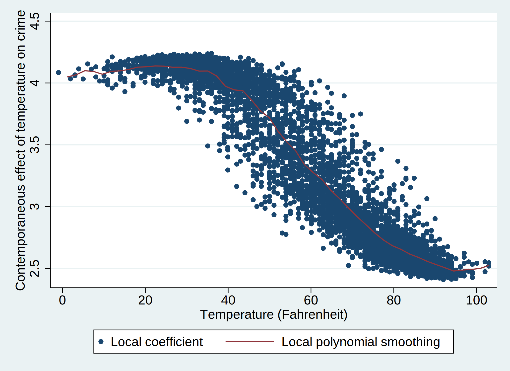

Chicago crime/temperature example
To demonstrate the usefulness of EDM in estimating the impact of causal variables, we use a real-world dataset that reflects daily temperature and crime levels in Chicago, which we make available in the chicago.dta file.
The data
First, we load the time series from the chicago.dta file:
Plotting the data gives:
A linear correlation of the dataset...
. corr crime temp
(obs=4,371)
| crime temp
-------------+------------------
crime | 1.0000
temp | 0.4620 1.0000
shows a mild correlation, however the causal structure (if any) and its direction is not shown.
Find the optimal embedding dimension
Now we use edm explore to find the optimal embedding dimension of the \(\texttt{Temperature}\) time series.
We check the values of \(E = 2, \dots 20\).
The crossfold(5) option means that, for each \(E\) value we run 5 sets of predictions, and for each set we take four fifths of the data for training and predict the remaining one fifth.
. edm explore temp, e(2/20) crossfold(5)
5-fold cross-validation progress (5 in total)
Percent complete: 0...10...20...30...40...50...60...70...80...90...
Empirical Dynamic Modelling
Univariate mapping with temp and its lag values
----------------------------------------------------------------------
--------- rho --------- --------- MAE ---------
Actual E theta Mean Std. Dev. Mean Std. Dev.
----------------------------------------------------------------------
2 1 .89818 .010487 7.1032 .20784
3 1 .90439 .0080387 6.9064 .27909
4 1 .91028 .0095908 6.6776 .29265
5 1 .91548 .010502 6.4794 .37096
6 1 .91879 .0078932 6.4002 .30358
7 1 .91934 .0071129 6.3696 .2972
8 1 .91798 .0070104 6.4607 .25364
9 1 .91722 .0071189 6.5027 .27352
10 1 .91762 .0073315 6.5053 .28581
11 1 .91561 .0077983 6.5573 .31192
12 1 .91638 .007973 6.5689 .32428
13 1 .91524 .0083123 6.6081 .31755
14 1 .91485 .0086085 6.6257 .35135
15 1 .9133 .0083516 6.6861 .32796
16 1 .91289 .0092333 6.7024 .35415
17 1 .91183 .0094544 6.7338 .35987
18 1 .91029 .0089739 6.7972 .35502
19 1 .90853 .008125 6.8699 .33429
20 1 .90766 .0091983 6.9047 .31412
----------------------------------------------------------------------
Note: Results from 5 runs
Note: Number of neighbours (k) is set to between 3 and 21
Note: 5-fold cross validation results reported
From the rho column we can see that the prediction accuracy is maximised when \(E = 7\), so we take this as our estimate of the embedding dimension.
Convergent cross-mapping
The edm xmap command will run the cross-mapping task, which allows us to ascertain the causal links between the crime and temperature time series.
. qui edm xmap temp crime, e(7) rep(4) ///
> library(10(5)200 210(10)1000 1020(20)2000 2050(50)4350 4365)
Note
This selects a lot of library points, and replicates the analysis some times, so this command may take a minute or two to finish.
Choosing a machine with more CPU cores or faster cores will help significantly.
Plotting the results gives:
. mat cyx = e(xmap_2)
. mat cxy = e(xmap_1)
. svmat cyx, names(chicago_yx)
. svmat cxy, names(chicago_xy)
. label variable chicago_xy3 "Crime|M(Temperature)"
. label variable chicago_yx3 "Temperature|M(Crime)"
. twoway (scatter chicago_xy3 chicago_xy2, mfcolor(%30) mlcolor(%30)) ///
> (scatter chicago_yx3 chicago_yx2, mfcolor(%30) mlcolor(%30)) ///
> (lpoly chicago_xy3 chicago_xy2)(lpoly chicago_yx3 chicago_yx2), ///
> xtitle(L) ytitle("{it:{&rho}}") legend(col(1))
. drop chicago_xy* chicago_yx*
In this plot, we can see that one direction shows a significant increase in accuracy as \(L\) increases, whereas the other direction is pretty flat. The direction which increases the most is the \(\texttt{Temperature} \mid M(\texttt{Crime})\) direction. This notation means we used \(\texttt{Crime}\) to predict \(\texttt{Temperature}\), and due to the backward nature of EDM means it refers to the causal link \(\texttt{Temperature} \to M(\texttt{Crime})\). Therefore, we'd conclude that there is a causal link from temperature to crime, though no link in the reverse direction (which would be implausible).
Inspecting the S-map coefficients
If we run xmap with the savesmap(beta) option, we can store the fitted S-map coefficients into variable which start with the prefix beta.
. edm xmap temp crime, e(7) alg(smap) k(-1) savesmap(beta)
Percent complete: 0...10...20...30...40...50...60...70...80...90...
Percent complete: 0...10...20...30...40...50...60...70...80...90...
Empirical Dynamic Modelling
Convergent Cross-mapping result for variables temp and crime
--------------------------------------------------------------------------
Mapping Library size rho MAE
--------------------------------------------------------------------------
crime ~ crime|M(temp) 4365 .46784 136.93
temp ~ temp|M(crime) 4365 .54886 14.661
--------------------------------------------------------------------------
Note: Number of neighbours (k) is set to 4364
Note: The embedding dimension E is 7
For example, the coefficient variables that are created are:
. ds beta*, detail
Variable Storage Display Value
name type format label Variable label
-------------------------------------------------------------------------------------------------------------------------------------------------
beta1_b0_rep1 double %10.0g constant in temp predicting crime S-map equation (rep 1)
beta1_b1_rep1 double %10.0g temp predicting crime or crime|M(temp) S-map coefficient (rep 1)
beta1_b2_rep1 double %10.0g l1.temp predicting crime or crime|M(temp) S-map coefficient (rep 1)
beta1_b3_rep1 double %10.0g l2.temp predicting crime or crime|M(temp) S-map coefficient (rep 1)
beta1_b4_rep1 double %10.0g l3.temp predicting crime or crime|M(temp) S-map coefficient (rep 1)
beta1_b5_rep1 double %10.0g l4.temp predicting crime or crime|M(temp) S-map coefficient (rep 1)
beta1_b6_rep1 double %10.0g l5.temp predicting crime or crime|M(temp) S-map coefficient (rep 1)
beta1_b7_rep1 double %10.0g l6.temp predicting crime or crime|M(temp) S-map coefficient (rep 1)
beta2_b0_rep1 double %10.0g constant in crime predicting temp S-map equation (rep 1)
beta2_b1_rep1 double %10.0g crime predicting temp or temp|M(crime) S-map coefficient (rep 1)
beta2_b2_rep1 double %10.0g l1.crime predicting temp or temp|M(crime) S-map coefficient (rep 1)
beta2_b3_rep1 double %10.0g l2.crime predicting temp or temp|M(crime) S-map coefficient (rep 1)
beta2_b4_rep1 double %10.0g l3.crime predicting temp or temp|M(crime) S-map coefficient (rep 1)
beta2_b5_rep1 double %10.0g l4.crime predicting temp or temp|M(crime) S-map coefficient (rep 1)
beta2_b6_rep1 double %10.0g l5.crime predicting temp or temp|M(crime) S-map coefficient (rep 1)
beta2_b7_rep1 double %10.0g l6.crime predicting temp or temp|M(crime) S-map coefficient (rep 1)
Plotting them allows us to see the contemporaneous effect of temperature on crime.
 